paquetes <- c("rgbif", "tidyverse", "sf", "terra", "geodata", "tidyterra",
"rnaturalearth", "rnaturalearthdata", "ggspatial", "paletteer",
"ggcorrplot", "ggridges", "patchwork", "plotly", "magick", "here")
faltantes <- paquetes[!paquetes %in% rownames(installed.packages())]
if (length(faltantes) > 0) install.packages(faltantes)Datos de GBIF y WorldClim en R
Ocurrencias, limpieza y espacio climático de dos anfibios mexicanos
Lección práctica para descargar, depurar y analizar registros de GBIF con rgbif, y extraer variables climáticas de WorldClim con geodata y terra.
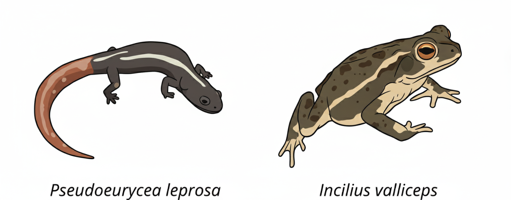
1 Objetivos
Al terminar esta lección podrás:
- Verificar nombres científicos en el esqueleto taxonómico de GBIF y detectar sinónimos.
- Contar y descargar ocurrencias con
rgbif, y saber cuándo usarocc_search()y cuándoocc_download(). - Depurar registros con criterios explícitos (tipo de registro, incertidumbre, año, duplicados).
- Convertir tablas a objetos espaciales con
sfy entender qué es un CRS. - Descargar capas de WorldClim con
geodata, recortarlas y extraer valores conterra. - Comparar el espacio climático de dos especies con gráficas y una prueba estadística sencilla.
Trabajaremos con dos anfibios con historias de vida muy distintas:
- Pseudoeurycea leprosa: salamandra pletodóntida endémica de las montañas del centro de México (Enciclovida).
- Incilius valliceps: sapo de tierras bajas del Golfo de México y Centroamérica (Enciclovida).
La pregunta guía es: ¿ocupan estas especies condiciones climáticas diferentes?
¿Cómo usar este proyecto?
Abre el archivo ejercicio_gbif.Rproj en RStudio. Así el directorio de trabajo será siempre la carpeta del proyecto y las rutas funcionarán en cualquier computadora. El mismo código de esta página está en R/ejercicio_datos_gbif.R para correrlo línea por línea.
2 Paquetes
| Paquete | Para qué lo usamos |
|---|---|
rgbif |
Consultar la API de GBIF: nombres, conteos y ocurrencias |
tidyverse |
Manipular tablas (dplyr, tidyr, readr) y graficar (ggplot2) |
sf |
Datos vectoriales (puntos, polígonos) |
terra |
Datos ráster: recortar, enmascarar y extraer valores |
geodata |
Descargar WorldClim, elevación, límites administrativos (GADM), etc. |
tidyterra |
Graficar objetos de terra con ggplot2
|
rnaturalearth, rnaturalearthdata
|
Polígonos de los países del mundo |
ggspatial |
Flecha de norte y barra de escala |
paletteer, ggcorrplot, ggridges, patchwork, plotly, magick
|
Paletas, correlaciones, densidades, composición de figuras, gráficos 3D e imágenes |
here |
Rutas relativas a la raíz del proyecto |
Instálalos una sola vez (no hace falta repetirlo cada clase):
library(rgbif) # API de GBIF
library(tidyverse) # manipulación y gráficos
library(sf) # datos vectoriales
library(terra) # datos ráster
library(geodata) # descarga de WorldClim y otras capas
library(tidyterra) # ráster + ggplot2
library(rnaturalearth)# países del mundo
library(ggspatial) # norte y escala
library(paletteer) # paletas de color
library(ggcorrplot) # matrices de correlación
library(ggridges) # gráficos de densidad apilados
library(patchwork) # combinar gráficos
library(plotly) # gráficos interactivos
library(magick) # leer imágenes
library(here) # rutas del proyecto
Conflicto de nombres:
extract()
Tanto tidyr (dentro de tidyverse) como terra tienen una función llamada extract(). La que se cargue al final “tapa” a la otra. Para evitar errores silenciosos escribiremos siempre terra::extract().
Definimos rutas y algunos objetos que usaremos en toda la lección:
ruta_datos <- here("datos") # aquí se guardan descargas
ruta_figuras <- here("figuras") # aquí se guardan figuras
dir.create(ruta_datos, showWarnings = FALSE)
dir.create(ruta_figuras, showWarnings = FALSE)
# Colores fijos por especie: así son iguales en todas las figuras
colores_spp <- c("Pseudoeurycea leprosa" = "#8d62fc",
"Incilius valliceps" = "#fc8d62")
# Zona de estudio (xmin, xmax, ymin, ymax) en grados
zona <- ext(-120, -77, 10, 32)3 Consultas taxonómicas en GBIF
Antes de descargar datos hay que asegurarse de que el nombre que buscamos es el que GBIF reconoce. GBIF organiza todos sus registros con un esqueleto taxonómico (backbone): cada nombre tiene una clave numérica (usageKey) y un estatus (ACCEPTED, SYNONYM, DOUBTFUL).
3.1 name_backbone(): la mejor coincidencia
name_backbone() devuelve un solo resultado: el que mejor coincide con el texto que le damos.
consulta_A <- name_backbone("Pseudoeurycea")
consulta_A |> select(usageKey, scientificName, rank, status, matchType, confidence)Columnas importantes:
-
usageKey: identificador numérico del nombre en GBIF. -
rank: categoría taxonómica (GENUS,SPECIES…). -
status: si el nombre es aceptado o sinónimo. -
matchType:EXACT(coincidencia exacta),FUZZY(con errores de escritura) oHIGHERRANK(solo encontró un nivel superior). UnFUZZYoHIGHERRANKes una señal para revisar. -
confidence: qué tan segura es la coincidencia (0–100).
Ahora busquemos un nombre antiguo del sapo:
consulta_B <- name_backbone("Bufo valliceps")
consulta_B |>
select(any_of(c("usageKey", "scientificName", "status",
"acceptedUsageKey", "species", "matchType")))Bufo valliceps es un sinónimo: el nombre aceptado es Incilius valliceps. La columna acceptedUsageKey contiene la clave del nombre aceptado y species su nombre.
Tip
any_of() selecciona las columnas que existan y no marca error si alguna falta. Es útil aquí porque acceptedUsageKey solo aparece cuando el nombre es sinónimo.
3.2 name_suggest(): autocompletar nombres
name_suggest() funciona como el autocompletado del buscador de GBIF: devuelve varias opciones que empiezan con el texto. Con rank limitamos la categoría.
sugerencias_A <- name_suggest(q = "Pseudoeurycea", rank = "species", limit = 100)$data
sugerencias_Asugerencias_B <- name_suggest(q = "Incilius", rank = "species")$data
sugerencias_B3.3 Guardar las claves de nuestras especies
Para descargar ocurrencias es más seguro usar la clave taxonómica (taxonKey) que el nombre como texto: con la clave, GBIF también devuelve los registros guardados bajo sinónimos.
clave_pse <- name_backbone("Pseudoeurycea leprosa")$usageKey
clave_inc <- name_backbone("Incilius valliceps")$usageKey
c(Pseudoeurycea = clave_pse, Incilius = clave_inc)Pseudoeurycea Incilius
2431394 2422389 Con name_usage() podemos ver la ficha completa de un nombre:
name_usage(key = clave_inc)$data |>
select(any_of(c("key", "scientificName", "authorship", "taxonomicStatus",
"kingdom", "phylum", "class", "order", "family", "genus")))4 Ocurrencias
4.1 ¿Cuántos registros hay? occ_count()
Antes de descargar conviene saber cuántos registros existen. occ_count() acepta los mismos filtros que la búsqueda:
4.2 occ_search() frente a occ_download()
rgbif tiene dos maneras de obtener ocurrencias:
occ_search() / occ_data()
|
occ_download() |
|
|---|---|---|
| Uso | Exploración rápida, clases | Análisis formales y publicaciones |
| Límite | Hasta 100 000 registros por consulta | Sin límite práctico |
| Cuenta de GBIF | No necesaria | Necesaria |
| Cita | No genera DOI | Genera un DOI citable |
En esta lección usamos occ_search(). Al final hay una sección con occ_download() para cuando hagas un trabajo que vayas a publicar.
Argumentos útiles de occ_search():
-
taxonKeyoscientificName: qué especie. -
hasCoordinate = TRUE: solo registros con coordenadas. -
hasGeospatialIssue = FALSE: excluye registros con problemas geoespaciales detectados por GBIF (p. ej. coordenadas en el mar o en otro país). -
country = "MX",year = "1990,2020",basisOfRecord = "PRESERVED_SPECIMEN": filtros por país, años o tipo de registro. -
limit: número máximo de registros (por defecto 500). Ojo: no es una muestra aleatoria, son los primeros que devuelve la API.
El resultado es una lista; la tabla de registros está en $data (también hay $meta con metadatos de la consulta).
4.3 Descarga paso a paso para Pseudoeurycea leprosa
res_pse <- occ_search(taxonKey = clave_pse,
hasCoordinate = TRUE,
hasGeospatialIssue = FALSE,
limit = 2000)
names(res_pse) # meta, hierarchy, data, media, facets
Pse_lep <- res_pse$dataLas tablas de GBIF tienen más de 100 columnas. Para trabajar (y guardar) solo nos quedamos con las útiles. Además, guardamos la tabla en datos/ para no volver a descargarla cada vez que corremos el código; esto hace que la lección sea reproducible y más rápida.
Escribimos una función para no repetir el mismo código con cada especie:
columnas_utiles <- c("key", "species", "scientificName",
"decimalLongitude", "decimalLatitude",
"coordinateUncertaintyInMeters", "basisOfRecord",
"institutionCode", "datasetKey", "countryCode",
"stateProvince", "year", "eventDate", "issues")
descargar_gbif <- function(taxon_key, etiqueta, archivo, limite = 2000) {
# 1. Si ya existe el archivo, no descargamos de nuevo
if (!file.exists(archivo)) {
message("Descargando de GBIF: ", etiqueta)
res <- occ_search(taxonKey = taxon_key,
hasCoordinate = TRUE,
hasGeospatialIssue = FALSE,
limit = limite)
res$data |>
select(any_of(columnas_utiles)) |>
completar_columnas() |> # mismas columnas siempre, en el mismo orden
write_csv(archivo)
}
# 2. Siempre leemos desde el CSV, con tipos de columna fijos
read_csv(archivo,
col_types = cols(.default = col_character(),
decimalLongitude = col_double(),
decimalLatitude = col_double(),
coordinateUncertaintyInMeters = col_double(),
year = col_integer())) |>
mutate(especie = etiqueta)
}
# Si una columna no vino en la descarga (p. ej. ningún registro tenía
# incertidumbre), la agregamos vacía para que el resto del código funcione
completar_columnas <- function(datos) {
faltan <- setdiff(columnas_utiles, names(datos))
datos[faltan] <- NA
datos[columnas_utiles] # ordena las columnas
}
¿Por qué fijar
col_types?
read_csv() adivina el tipo de cada columna. Si en una especie institutionCode viene vacía, la leerá como lógica y en la otra como texto, y luego bind_rows() fallará. Fijar los tipos evita ese problema.
Pse_lep <- descargar_gbif(clave_pse, "Pseudoeurycea leprosa",
file.path(ruta_datos, "gbif_pseudoeurycea_leprosa.csv"))
dim(Pse_lep)[1] 2000 15glimpse(Pse_lep)Rows: 2,000
Columns: 15
$ key <chr> "6234981332", "6235052677", "6235062487"…
$ species <chr> "Pseudoeurycea leprosa", "Pseudoeurycea …
$ scientificName <chr> "Pseudoeurycea leprosa (Cope, 1869)", "P…
$ decimalLongitude <dbl> -99.28463, -99.28463, -99.30327, -99.309…
$ decimalLatitude <dbl> 19.30866, 19.30866, 19.30581, 19.31312, …
$ coordinateUncertaintyInMeters <dbl> 244, 244, 206, 4, 280, 66, 15, 2, 8, 4, …
$ basisOfRecord <chr> "HUMAN_OBSERVATION", "HUMAN_OBSERVATION"…
$ institutionCode <chr> "iNaturalist", "iNaturalist", "iNaturali…
$ datasetKey <chr> "50c9509d-22c7-4a22-a47d-8c48425ef4a7", …
$ countryCode <chr> "MX", "MX", "MX", "MX", "MX", "MX", "MX"…
$ stateProvince <chr> "Distrito Federal", "Distrito Federal", …
$ year <int> 2026, 2026, 2026, 2026, 2026, 2026, 2026…
$ eventDate <chr> "2026-04-26T14:08", "2026-04-26T14:08", …
$ issues <chr> "cdc,cdround", "cdc,cdround", "cdc,cdrou…
$ especie <chr> "Pseudoeurycea leprosa", "Pseudoeurycea …4.4 Explorar los registros
# ¿En qué países hay registros?
count(Pse_lep, countryCode, sort = TRUE)# ¿Qué tipo de registros son?
count(Pse_lep, basisOfRecord, sort = TRUE)La columna basisOfRecord indica el origen del registro (guía de GBIF):
-
PRESERVED_SPECIMEN: ejemplar depositado en una colección científica (verificable). -
HUMAN_OBSERVATION: observación de una persona (p. ej. iNaturalist, con o sin foto). -
MACHINE_OBSERVATION: cámaras trampa, sensores, grabaciones. -
MATERIAL_SAMPLE,MATERIAL_CITATION,OCCURRENCE: otros orígenes, a menudo menos documentados.
¿Qué instituciones aportan los datos?
Pse_lep |>
count(institutionCode) |>
ggplot(aes(x = n, y = fct_reorder(institutionCode, n))) +
geom_col(fill = colores_spp["Pseudoeurycea leprosa"]) +
labs(x = "Número de registros", y = "Institución (NA = sin dato)") +
theme_minimal()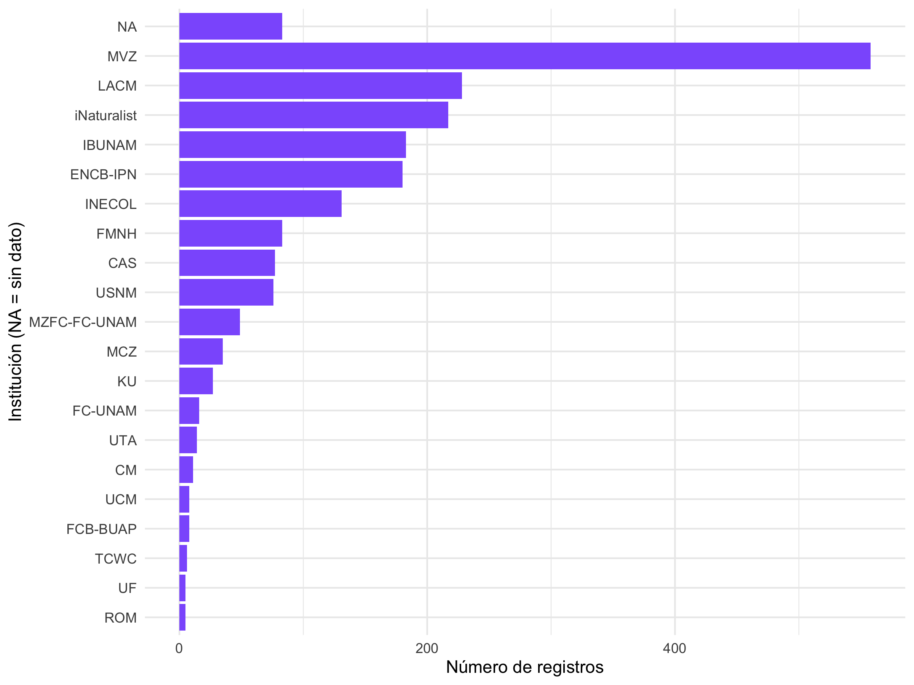
¿Y en qué años se registraron?
ggplot(Pse_lep, aes(x = year)) +
geom_histogram(binwidth = 5, fill = colores_spp["Pseudoeurycea leprosa"], color = "white") +
labs(x = "Año del registro", y = "Número de registros") +
theme_minimal()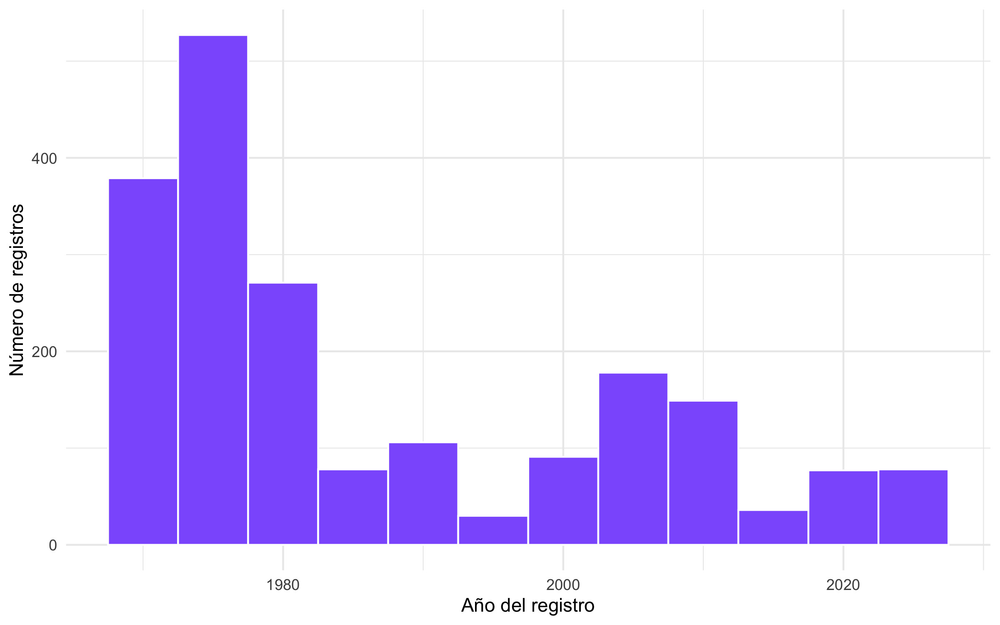
Por último, la columna issues resume los problemas que GBIF detectó en cada registro (códigos separados por comas). Con gbif_issues() vemos qué significa cada código:
Pse_lep |>
separate_longer_delim(issues, delim = ",") |>
count(issues, sort = TRUE)gbif_issues() |> head(10)4.5 Depuración de registros
No hay una receta única para limpiar datos de GBIF; lo importante es que cada criterio sea explícito y justificable. Usaremos cuatro:
- Tipo de registro: solo ejemplares de colección y observaciones humanas.
-
Incertidumbre de la coordenada ≤ 10 km. Más allá de eso, el punto puede caer en una celda climática distinta. Si el dato no existe (
NA) lo conservamos, pero es una decisión que puedes cambiar. - Año ≥ 1950. WorldClim describe el clima de 1970–2000; registros muy antiguos pueden venir de sitios que ya cambiaron, y suelen tener coordenadas asignadas después.
- Duplicados: un solo registro por par de coordenadas.
Importante
En la versión anterior de esta lección se eliminaban los registros sin institutionCode. Ese campo vacío no indica que un registro sea malo (muchas bases de datos simplemente no lo llenan), así que ya no lo usamos como filtro.
limpiar_gbif <- function(datos,
tipos = c("HUMAN_OBSERVATION", "PRESERVED_SPECIMEN"),
incertidumbre_max = 10000, # en metros
anio_min = 1950) {
datos |>
filter(basisOfRecord %in% tipos) |>
filter(is.na(coordinateUncertaintyInMeters) |
coordinateUncertaintyInMeters <= incertidumbre_max) |>
filter(!is.na(year), year >= anio_min) |>
distinct(decimalLongitude, decimalLatitude, .keep_all = TRUE)
}
Pse_lep_limpio <- limpiar_gbif(Pse_lep)
# ¿Cuántos registros perdimos?
c(original = nrow(Pse_lep), limpio = nrow(Pse_lep_limpio))original limpio
2000 462
Para ir más lejos:
CoordinateCleaner
El paquete CoordinateCleaner aplica pruebas automáticas: coordenadas en centroides de países, capitales, instituciones, en el mar, valores 0,0, etc.
library(CoordinateCleaner)
Pse_lep_cc <- clean_coordinates(Pse_lep_limpio,
lon = "decimalLongitude",
lat = "decimalLatitude",
species = "especie",
tests = c("capitals", "centroids", "equal",
"gbif", "institutions", "zeros"))
summary(Pse_lep_cc)
4.6 De tabla a objeto espacial con sf
Para que R sepa que las columnas de longitud y latitud son coordenadas, convertimos la tabla en un objeto sf. Necesitamos dos cosas:
-
coords: las columnas con x (longitud) y y (latitud), en ese orden. -
crs: el sistema de coordenadas de referencia. GBIF siempre entrega coordenadas en WGS 84, cuyo código EPSG es 4326.
4.7 La segunda especie: Incilius valliceps
Como ya tenemos funciones, repetir el proceso toma tres líneas. Usamos exactamente los mismos criterios para que la comparación sea justa.
Inc_val <- descargar_gbif(clave_inc, "Incilius valliceps",
file.path(ruta_datos, "gbif_incilius_valliceps.csv"))
count(Inc_val, basisOfRecord, sort = TRUE)original limpio
2000 1756 Unimos ambas especies en un solo objeto. Desde aquí trabajaremos todo junto y distinguiremos por la columna especie.
ocurrencias_sp <- rbind(Pse_lep_sp, Inc_val_sp) # mismas columnas en ambas
count(st_drop_geometry(ocurrencias_sp), especie)
5 Capas geográficas con geodata
geodata descarga capas globales y las guarda en la carpeta que indiquemos con path. Si el archivo ya existe, no lo vuelve a descargar.
Funciones principales:
| Función | Qué descarga |
|---|---|
worldclim_global(var, res, path) |
Clima actual (1970–2000) para todo el mundo |
worldclim_country(country, var, path) |
Clima actual de un país a 30 segundos (~1 km) |
worldclim_tile(var, lon, lat, path) |
Clima a 30 s para un mosaico de 30° × 30° |
cmip6_world(model, ssp, time, var, res, path) |
Proyecciones de clima futuro (CMIP6) |
elevation_global(res, path) |
Elevación global |
gadm(country, level, path) |
Límites administrativos (país, estados, municipios) |
world(resolution, path) |
Límites de países |
Las resoluciones (res) están en minutos de grado:
res |
Tamaño aproximado de celda en el ecuador |
|---|---|
| 10 | ~18.5 km |
| 5 | ~9.3 km |
| 2.5 | ~4.6 km |
| 0.5 (30 s) | ~1 km |
A mayor resolución, archivos mucho más pesados. Para clase usamos 10 y 5 minutos.
5.1 Elevación y países
alt <- elevation_global(res = 5, path = ruta_datos)
names(alt) <- "elevacion"
altclass : SpatRaster
size : 2160, 4320, 1 (nrow, ncol, nlyr)
resolution : 0.08333333, 0.08333333 (x, y)
extent : -180, 180, -90, 90 (xmin, xmax, ymin, ymax)
coord. ref. : lon/lat WGS 84 (EPSG:4326)
source : wc2.1_5m_elev.tif
name : elevacion
min value : -415
max value : 6574 Un objeto SpatRaster resume su dimensión (filas, columnas, capas), resolución, extensión y CRS. Para trabajar solo con nuestra región usamos crop():
alt_zona <- crop(alt, zona)
alt_zonaclass : SpatRaster
size : 264, 516, 1 (nrow, ncol, nlyr)
resolution : 0.08333333, 0.08333333 (x, y)
extent : -120, -77, 10, 32 (xmin, xmax, ymin, ymax)
coord. ref. : lon/lat WGS 84 (EPSG:4326)
source(s) : memory
varname : wc2.1_5m_elev
name : elevacion
min value : -4
max value : 4093 Los límites de países vienen de rnaturalearth (sustituye a rworldxtra, que usaba la versión anterior):
paises <- ne_countries(scale = "medium", returnclass = "sf")5.2 Mapa de ocurrencias
map_occ <- ggplot() +
geom_spatraster(data = alt_zona, alpha = 0.6) +
geom_sf(data = paises, fill = NA, color = "grey25", linewidth = 0.4) +
geom_sf(data = ocurrencias_sp, aes(color = especie), size = 1.3, alpha = 0.8) +
coord_sf(xlim = c(-120, -77), ylim = c(10, 32), expand = FALSE) +
scale_fill_paletteer_c("grDevices::terrain.colors",
limits = c(0, 5000), na.value = "transparent") +
scale_color_manual(values = colores_spp) +
annotation_north_arrow(location = "bl", which_north = "true",
pad_x = unit(0.2, "in"), pad_y = unit(0.4, "in"),
style = north_arrow_fancy_orienteering(fill = c("white", "grey60"))) +
annotation_scale(location = "bl", bar_cols = c("grey60", "white")) +
labs(fill = "Altitud (msnm)", color = "Especie", x = NULL, y = NULL) +
theme_minimal()
map_occ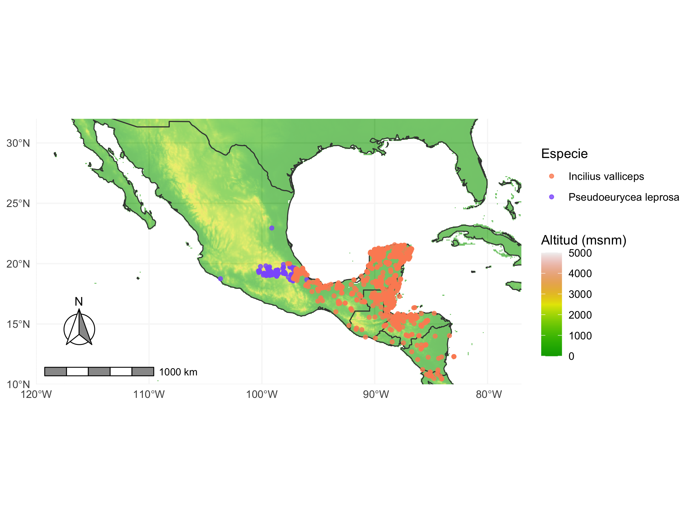
Orden de las capas
En ggplot2 cada geom_* se dibuja encima del anterior: primero el ráster, luego los límites de países y al final los puntos, para que no queden tapados.
6 Clima con WorldClim
WorldClim 2.1 ofrece clima promedio de 1970–2000. Las variables disponibles en worldclim_global() son:
var |
Contenido | Capas | Unidades |
|---|---|---|---|
"tavg", "tmin", "tmax"
|
Temperatura media, mínima y máxima mensual | 12 | °C |
"prec" |
Precipitación mensual | 12 | mm |
"wind" |
Velocidad del viento | 12 | m/s |
"vapr" |
Presión de vapor | 12 | kPa |
"bio" |
19 variables bioclimáticas | 19 | °C, mm o índices |
Tip
En WorldClim 2.1 la temperatura ya viene en °C. En la versión 1.4 venía multiplicada por 10, así que si usas material antiguo ten cuidado al comparar.
6.1 Variables bioclimáticas
Las variables bioclimáticas se calculan a partir de la temperatura y la precipitación mensual y representan promedios, estacionalidad y extremos con sentido biológico.
bio_info <- tibble(
variable = sprintf("bio_%02d", 1:19),
descripcion = c(
"Temperatura media anual (°C)",
"Rango diurno medio (°C)",
"Isotermalidad (BIO2/BIO7 × 100)",
"Estacionalidad de la temperatura (desv. est. × 100)",
"Temperatura máxima del mes más cálido (°C)",
"Temperatura mínima del mes más frío (°C)",
"Rango anual de temperatura (BIO5 − BIO6, °C)",
"Temperatura media del trimestre más húmedo (°C)",
"Temperatura media del trimestre más seco (°C)",
"Temperatura media del trimestre más cálido (°C)",
"Temperatura media del trimestre más frío (°C)",
"Precipitación anual (mm)",
"Precipitación del mes más húmedo (mm)",
"Precipitación del mes más seco (mm)",
"Estacionalidad de la precipitación (coef. de variación)",
"Precipitación del trimestre más húmedo (mm)",
"Precipitación del trimestre más seco (mm)",
"Precipitación del trimestre más cálido (mm)",
"Precipitación del trimestre más frío (mm)"
)
)
knitr::kable(bio_info, col.names = c("Variable", "Descripción"))| Variable | Descripción |
|---|---|
| bio_01 | Temperatura media anual (°C) |
| bio_02 | Rango diurno medio (°C) |
| bio_03 | Isotermalidad (BIO2/BIO7 × 100) |
| bio_04 | Estacionalidad de la temperatura (desv. est. × 100) |
| bio_05 | Temperatura máxima del mes más cálido (°C) |
| bio_06 | Temperatura mínima del mes más frío (°C) |
| bio_07 | Rango anual de temperatura (BIO5 − BIO6, °C) |
| bio_08 | Temperatura media del trimestre más húmedo (°C) |
| bio_09 | Temperatura media del trimestre más seco (°C) |
| bio_10 | Temperatura media del trimestre más cálido (°C) |
| bio_11 | Temperatura media del trimestre más frío (°C) |
| bio_12 | Precipitación anual (mm) |
| bio_13 | Precipitación del mes más húmedo (mm) |
| bio_14 | Precipitación del mes más seco (mm) |
| bio_15 | Estacionalidad de la precipitación (coef. de variación) |
| bio_16 | Precipitación del trimestre más húmedo (mm) |
| bio_17 | Precipitación del trimestre más seco (mm) |
| bio_18 | Precipitación del trimestre más cálido (mm) |
| bio_19 | Precipitación del trimestre más frío (mm) |
Descargamos las 19 capas a 10 minutos:
env <- worldclim_global(var = "bio", res = 10, path = ruta_datos)
names(env) [1] "wc2.1_10m_bio_1" "wc2.1_10m_bio_2" "wc2.1_10m_bio_3" "wc2.1_10m_bio_4"
[5] "wc2.1_10m_bio_5" "wc2.1_10m_bio_6" "wc2.1_10m_bio_7" "wc2.1_10m_bio_8"
[9] "wc2.1_10m_bio_9" "wc2.1_10m_bio_10" "wc2.1_10m_bio_11" "wc2.1_10m_bio_12"
[13] "wc2.1_10m_bio_13" "wc2.1_10m_bio_14" "wc2.1_10m_bio_15" "wc2.1_10m_bio_16"
[17] "wc2.1_10m_bio_17" "wc2.1_10m_bio_18" "wc2.1_10m_bio_19"Los nombres originales son largos (wc2.1_10m_bio_1). Los cambiamos por bio_01 … bio_19. Lo podemos hacer con un ciclo for:
[1] "bio_01" "bio_02" "bio_03" "bio_04" "bio_05" "bio_06" "bio_07" "bio_08"
[9] "bio_09" "bio_10" "bio_11" "bio_12" "bio_13" "bio_14" "bio_15" "bio_16"
[17] "bio_17" "bio_18" "bio_19"…pero en R casi todas las funciones son vectorizadas: operan sobre todo el vector a la vez. La misma tarea en una línea:
class : SpatRaster
size : 1080, 2160, 19 (nrow, ncol, nlyr)
resolution : 0.1666667, 0.1666667 (x, y)
extent : -180, 180, -90, 90 (xmin, xmax, ymin, ymax)
coord. ref. : lon/lat WGS 84 (EPSG:4326)
sources : wc2.1_10m_bio_1.tif
wc2.1_10m_bio_2.tif
wc2.1_10m_bio_3.tif
... and 16 more sources
names : bio_01, bio_02, bio_03, bio_04, bio_05, bio_06, ...
min values : -54.72435, 1.00000, 9.131122, 0.000, -29.68600, -72.50025, ...
max values : 30.98764, 21.14754, 100.000000, 2363.846, 48.08275, 26.30000, ... 6.2 Recortar, enmascarar y visualizar
-
crop()recorta el ráster a un rectángulo (extensión). -
mask()convierte enNAtodo lo que queda fuera de un polígono.
mexico <- paises |> filter(iso_a3 == "MEX") |> vect() # sf -> SpatVector
bio_mex <- env[[c("bio_01", "bio_12")]] |> # [[ ]] selecciona capas
crop(mexico) |>
mask(mexico)
plot(bio_mex) # vista rápida con el plot() de terra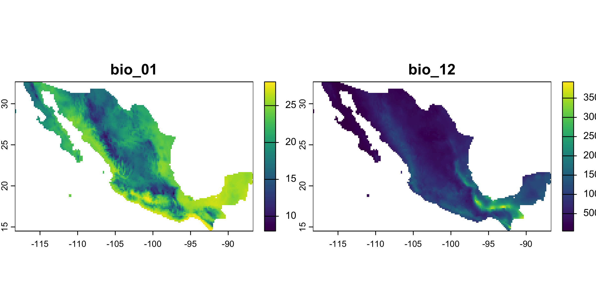
Con tidyterra podemos graficar varias capas con ggplot2; facet_wrap(~lyr) hace un panel por capa:
ggplot() +
geom_spatraster(data = bio_mex[["bio_01"]]) +
geom_sf(data = ocurrencias_sp, aes(color = especie), size = 0.8) +
scale_fill_whitebox_c(palette = "muted", na.value = "transparent") +
scale_color_manual(values = colores_spp) +
labs(fill = "BIO1 (°C)", color = "Especie") +
theme_minimal()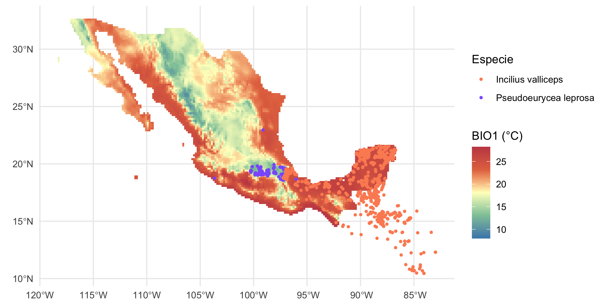
6.3 Extraer valores en los puntos
terra::extract() toma un ráster y un conjunto de puntos, y devuelve el valor de cada capa en la celda donde cae cada punto. Convertimos los puntos a SpatVector con vect() y usamos ID = FALSE para no añadir una columna de índice.
puntos <- vect(ocurrencias_sp)
valores_bio <- terra::extract(env, puntos, ID = FALSE)
valores_alt <- terra::extract(alt, puntos, ID = FALSE)
df_env <- ocurrencias_sp |>
st_drop_geometry() |>
select(especie, decimalLongitude, decimalLatitude) |>
bind_cols(valores_bio, valores_alt)
head(df_env)Algunos puntos caen en celdas sin datos (por ejemplo, en la costa, donde la celda es mar). Los quitamos:
7 Análisis del espacio climático
7.1 Correlación entre variables
Muchas variables bioclimáticas están muy correlacionadas (por ejemplo, BIO1 con BIO10 y BIO11). Esto importa, sobre todo, en modelos de distribución de especies, donde se recomienda no usar al mismo tiempo variables con |r| > 0.7–0.8.
mat_cor <- df_env |>
select(starts_with("bio_")) |>
cor()
ggcorrplot(mat_cor,
hc.order = TRUE, # agrupa variables parecidas (clúster jerárquico)
type = "lower", # solo el triángulo inferior
lab = TRUE, # muestra los valores
lab_size = 2.5,
colors = c("blue", "white", "red"))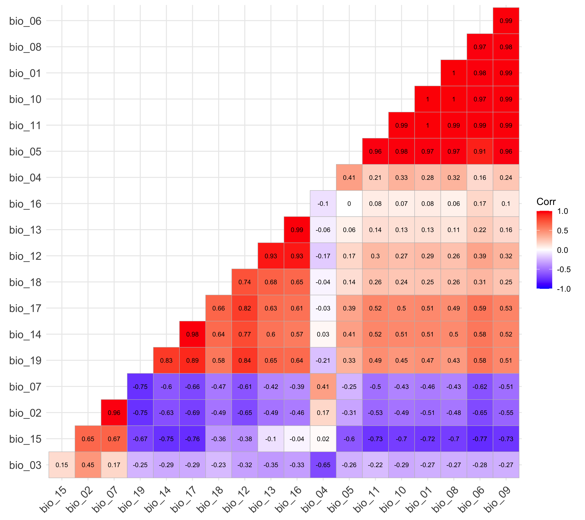
Una lista de los pares más correlacionados es más fácil de leer que la matriz:
as.data.frame(as.table(mat_cor)) |>
filter(as.character(Var1) < as.character(Var2), abs(Freq) > 0.8) |>
arrange(desc(abs(Freq))) |>
rename(r = Freq)7.2 Distribuciones por especie
Comparamos temperatura media anual, precipitación anual y elevación con gráficos de densidad:
grafico_ridge <- function(variable, titulo) {
ggplot(df_env, aes(x = .data[[variable]], y = especie, fill = especie)) +
geom_density_ridges(alpha = 0.8, scale = 1.2, color = "white") +
scale_fill_manual(values = colores_spp) +
labs(x = titulo, y = NULL) +
theme_ridges() +
theme(legend.position = "none")
}
p_temp <- grafico_ridge("bio_01", "Temperatura media anual (°C, BIO1)")
p_precip <- grafico_ridge("bio_12", "Precipitación anual (mm, BIO12)")
p_alt <- grafico_ridge("elevacion", "Elevación (msnm)")
p_contraste <- p_temp / p_precip / p_alt # patchwork: "/" apila verticalmente
p_contraste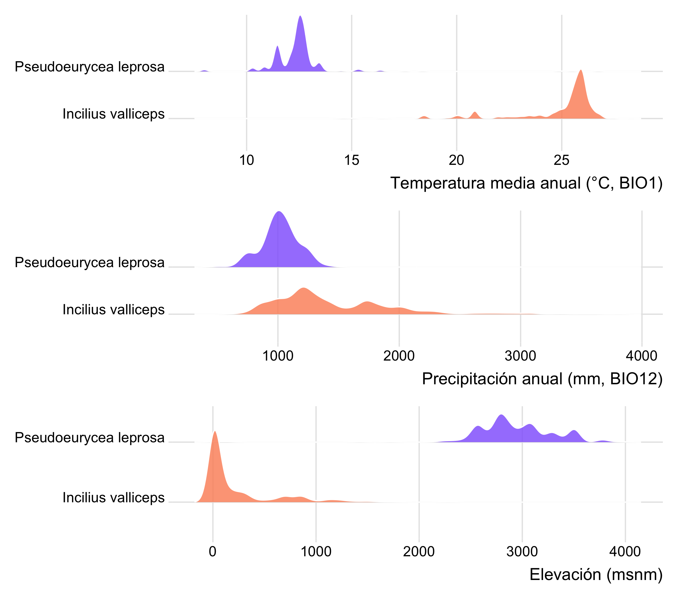
.data[[variable]]
Dentro de una función, aes(x = variable) buscaría una columna llamada literalmente “variable”. Con .data[[variable]] le decimos a ggplot2 que use la columna cuyo nombre está guardado en ese texto.
¿Son diferentes? Una prueba de Wilcoxon (no paramétrica) compara las medianas de BIO1 entre especies:
df_env |>
group_by(especie) |>
summarise(n = n(),
mediana_bio01 = median(bio_01),
mediana_bio12 = median(bio_12),
mediana_alt = median(elevacion))wilcox.test(bio_01 ~ especie, data = df_env)
Wilcoxon rank sum test with continuity correction
data: bio_01 by especie
W = 808290, p-value < 2.2e-16
alternative hypothesis: true location shift is not equal to 0
Advertencia
Los registros de GBIF no son una muestra aleatoria: se concentran cerca de caminos, ciudades y estaciones de investigación, y puntos cercanos tienen climas parecidos (autocorrelación espacial). Interpreta el valor de p con cautela; la diferencia en los gráficos suele ser más informativa.
7.3 Espacio climático en dos dimensiones
p_dif_env <- ggplot(df_env, aes(x = bio_12, y = bio_01, color = especie, fill = especie)) +
geom_point(alpha = 0.5, size = 2) +
stat_ellipse(geom = "polygon", alpha = 0.2, color = NA, level = 0.95) +
scale_color_manual(values = colores_spp) +
scale_fill_manual(values = colores_spp) +
labs(x = "Precipitación anual (mm)",
y = "Temperatura media anual (°C)",
color = "Especie", fill = "Especie",
title = "Espacio climático de las especies") +
theme_minimal(base_size = 13)
p_dif_env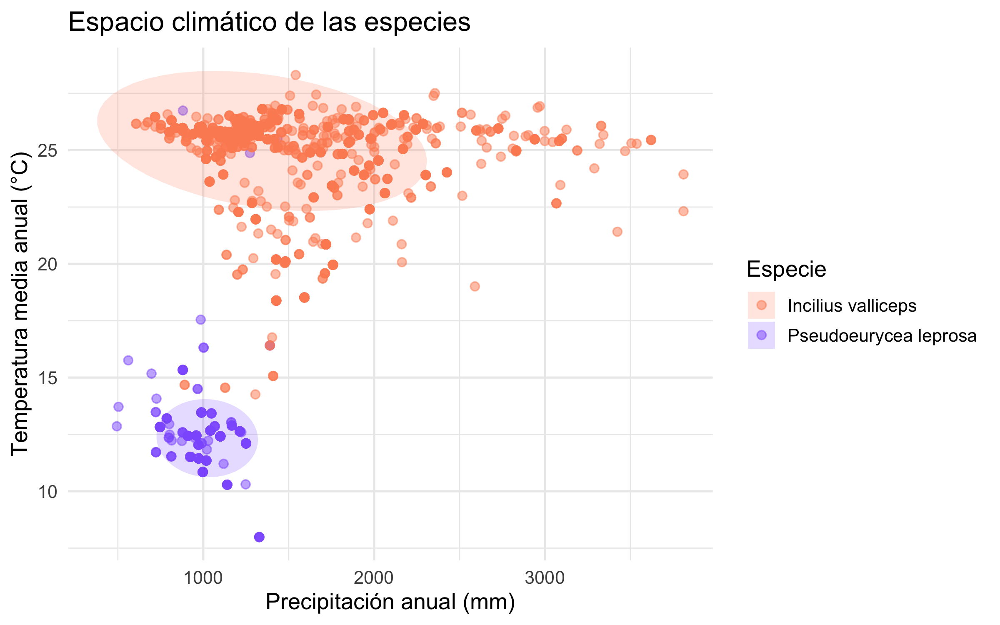
Las elipses encierran ~95 % de los puntos de cada especie suponiendo una distribución normal bivariada. Si se traslapan poco, las especies ocupan climas distintos.
7.4 Clima a lo largo del año
Las variables mensuales (tavg, prec) permiten ver cómo cambia el clima durante el año en los sitios donde vive cada especie. Escribimos una función que descarga una variable, extrae los valores y promedia por especie y mes:
meses <- c("Ene", "Feb", "Mar", "Abr", "May", "Jun",
"Jul", "Ago", "Sep", "Oct", "Nov", "Dic")
clima_mensual <- function(var) {
r <- worldclim_global(var = var, res = 10, path = ruta_datos)
names(r) <- meses
terra::extract(r, puntos, ID = FALSE) |>
mutate(especie = ocurrencias_sp$especie) |>
pivot_longer(-especie, names_to = "mes", values_to = "valor") |>
group_by(especie, mes) |>
summarise(valor = mean(valor, na.rm = TRUE), .groups = "drop") |>
mutate(variable = var)
}
clima_mes <- bind_rows(clima_mensual("tavg"), clima_mensual("prec")) |>
mutate(mes = factor(mes, levels = meses),
variable = recode(variable,
tavg = "Temperatura media (°C)",
prec = "Precipitación (mm)"))
ggplot(clima_mes, aes(x = mes, y = valor, color = especie, group = especie)) +
geom_line(linewidth = 1) +
geom_point() +
facet_wrap(~variable, ncol = 1, scales = "free_y") +
scale_color_manual(values = colores_spp) +
labs(x = NULL, y = NULL, color = "Especie") +
theme_minimal()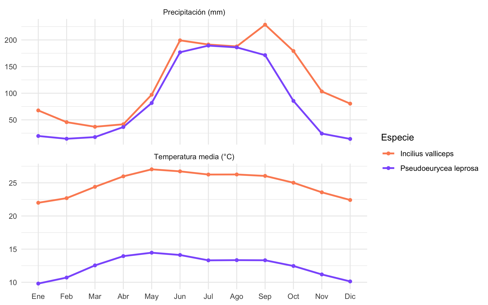
7.5 Figura compuesta
patchwork permite combinar gráficos con un diseño en texto: cada letra es un panel.
img <- image_read(here("img", "especies_imgs_animado.png"))
img_plot <- wrap_elements(full = grid::rasterGrob(img, interpolate = TRUE))
diseno <- "
AB
CC
"
final_plot <- (p_dif_env + theme(legend.position = "none")) +
img_plot +
map_occ +
plot_layout(design = diseno, heights = c(1, 2))
final_plot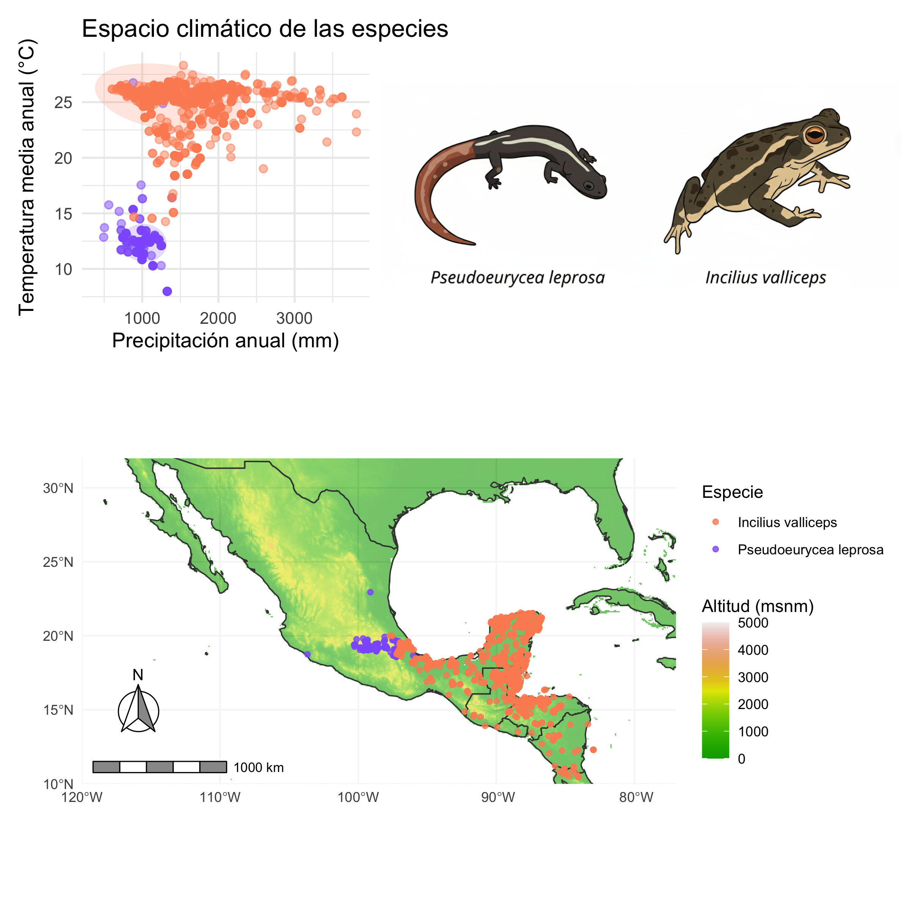
7.6 Espacio climático en 3D
Con plotly podemos rotar el espacio climático. Usamos precipitación anual (BIO12), temperatura media (BIO1) y rango anual de temperatura (BIO7).
fig_3d <- plot_ly(
data = df_env,
x = ~bio_12,
y = ~bio_01,
z = ~bio_07,
color = ~especie,
colors = unname(colores_spp[sort(unique(df_env$especie))]),
type = "scatter3d",
mode = "markers",
marker = list(size = 4, opacity = 0.7)
) |>
layout(
title = "Espacio climático 3D de dos especies",
scene = list(
xaxis = list(title = "Precipitación anual (mm)"),
yaxis = list(title = "Temp. media anual (°C)"),
zaxis = list(title = "Rango anual de temp. (°C)")
)
)
fig_3dhtmlwidgets::saveWidget(fig_3d, file.path(ruta_figuras, "espacio_ambiental_3D.html"))8 Más funciones útiles
Esta sección no se ejecuta al generar la página; cópiala y pruébala en tu consola.
8.1 Descarga formal con DOI: occ_download()
Para una tesis o un artículo, GBIF pide citar el DOI de la descarga. Necesitas una cuenta gratuita en gbif.org y guardar tus credenciales en el archivo .Renviron (nunca dentro del script):
usethis::edit_r_environ()
# Escribe en el archivo, guarda y reinicia R:
# GBIF_USER="tu_usuario"
# GBIF_PWD="tu_contraseña"
# GBIF_EMAIL="tu_correo"descarga <- occ_download(
pred_in("taxonKey", c(clave_pse, clave_inc)),
pred("hasCoordinate", TRUE),
pred("hasGeospatialIssue", FALSE),
pred_in("basisOfRecord", c("HUMAN_OBSERVATION", "PRESERVED_SPECIMEN")),
pred_gte("year", 1950),
format = "SIMPLE_CSV"
)
occ_download_wait(descarga) # espera a que GBIF prepare el archivo
datos_doi <- occ_download_get(descarga, path = ruta_datos) |>
occ_download_import()
gbif_citation(descarga) # texto de la cita con DOILas funciones pred*() construyen los filtros: pred() (igual a), pred_in() (uno de varios valores), pred_gte() / pred_lte() (mayor o igual / menor o igual), pred_within() (dentro de un polígono en formato WKT), entre otras.
8.2 Clima a mayor resolución para un país
# ~1 km de resolución, solo México (archivo pesado)
tavg_mex <- worldclim_country("MEX", var = "tavg", path = ruta_datos)
8.3 Clima futuro: cmip6_world()
bio_2050 <- cmip6_world(model = "MPI-ESM1-2-HR", ssp = "585",
time = "2041-2060", var = "bioc",
res = 10, path = ruta_datos)
names(bio_2050) <- sprintf("bio_%02d", 1:19)
# Cambio de temperatura media anual en los sitios de cada especie
futuro <- terra::extract(bio_2050[["bio_01"]], puntos, ID = FALSE)
df_cambio <- tibble(especie = ocurrencias_sp$especie,
actual = valores_bio$bio_01,
futuro = futuro$bio_01) |>
mutate(cambio = futuro - actual)
df_cambio |>
group_by(especie) |>
summarise(cambio_medio = mean(cambio, na.rm = TRUE))ssp puede ser "126", "245", "370" o "585" (de menor a mayor emisión) y time "2021-2040", "2041-2060" o "2061-2080".
8.4 Límites administrativos: gadm()
estados <- gadm("MEX", level = 1, path = ruta_datos) |> st_as_sf()
ggplot() +
geom_sf(data = estados, fill = "grey95") +
geom_sf(data = ocurrencias_sp, aes(color = especie), size = 0.8) +
scale_color_manual(values = colores_spp) +
theme_minimal()9 Ejercicios
- Cambia
incertidumbre_maxa 1000 m yanio_mina 1970 enlimpiar_gbif(). ¿Cuántos registros pierdes? ¿Cambian las conclusiones? - Elige otra especie de Pseudoeurycea de
sugerencias_Ay repite el análisis condescargar_gbif()ylimpiar_gbif(). - Haz un gráfico de densidad para BIO15 (estacionalidad de la precipitación). ¿Qué especie vive en climas más estacionales?
- Con la matriz de correlación, elige un subconjunto de 5–6 variables con |r| < 0.7 entre ellas.
- Usa
cmip6_world()para estimar cuánto cambiaría la temperatura media anual en los sitios de cada especie hacia 2041–2060.
10 Recursos
- Documentación de rgbif
- Documentación de geodata
- Curso de uso de datos de GBIF (español)
- WorldClim 2.1
- Spatial Data Science with R and terra
Página generada con R version 4.4.0 (2024-04-24) · rgbif 3.8.3 · geodata 0.6.6 · terra 1.8.70